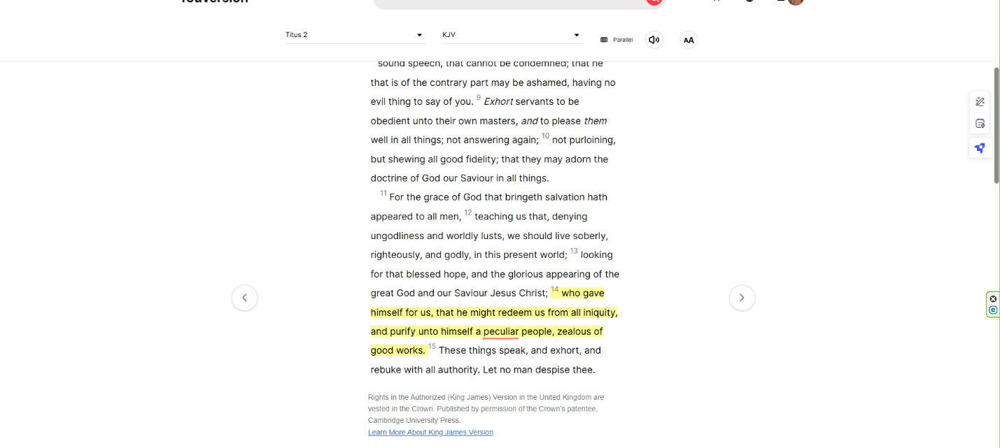
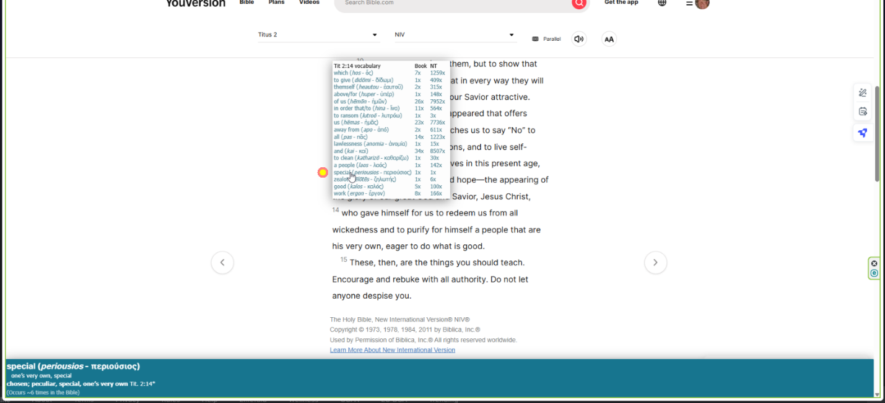
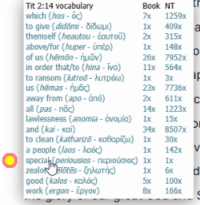
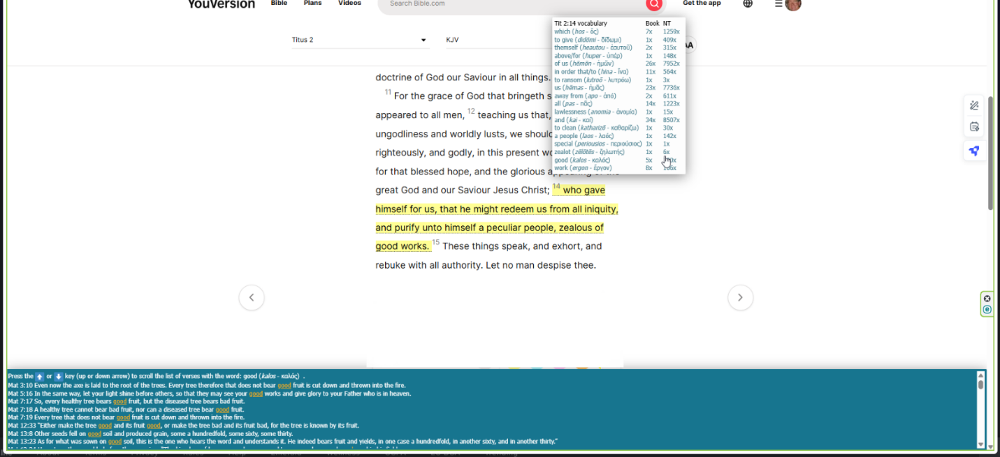
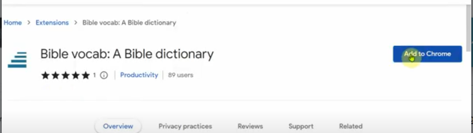

Brothers, I stumbled onto another great Bible study resource yesterday morning, and today I'm finding out it's even more useful than I first thought. It's a browser extension that gives you the Hebrew/Greek interlinear on top of any of your online study Bibles. Let's walk through it using Titus 2:14 at bible.com (the YouVersion app).
1. Go to your favorite Bible — bible.com, ebible.com, bible.org, biblegateway.com, whatever you use — and start reading.

2. Choose the word you're interested in. In this case, “peculiar.” Roll your mouse over the verse number.

3. Now you have great information right at your fingertips, instantly.

4. Roll your mouse over any of the hyperlinked text and it displays more information below. Click it and it takes you straight to the STEP Bible.

Here's the free online version of the STEP Bible itself: stepbible.org.
The extension is called “Bible Vocab: A Bible Dictionary,” and you can add it straight from the Chrome Web Store:

While I have you, an update on how I'm doing learning Koine Greek. The learning itself is going fine, but I've been having trouble with the logistics of the Biblical Mastery Academy resources. This morning I decided to switch over to Biblingo instead — biblingo.org. So far, I like it, and I'm hoping I can still finish my goal of reading the entire New Testament in Greek before the end of summer. I'll report back once I've used it a little longer.
— Erv
Comments